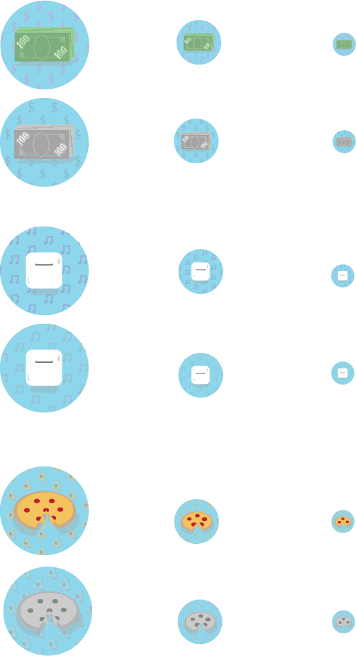
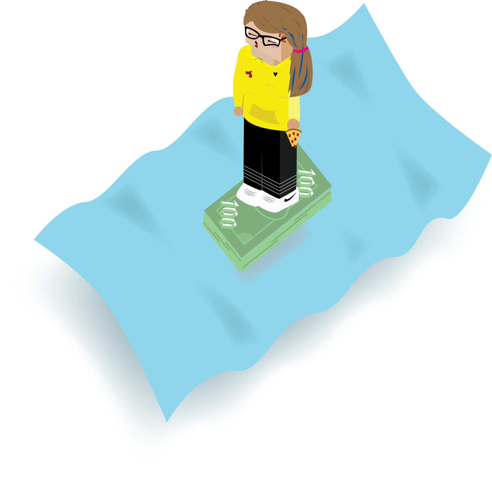

October 7, 2019
Project 2: ICONS

(1) My first icon is a stack of 100s. My name is Kaitlyn Scanlon, mostly referred to by friends as $can. I wanted to incorporate that aspect of my personality into a visual representation.
(2) Airpods. I listen to music constantly and the day wouldn't be right if I forgot them at home.
(3) Pizza is just the first thing I think of when I'm hungry. It's so easy and un-screw up-able.
August 21, 2018
Project 1: ISOMETRIC AVATAR

This was just an inside joke with myself. I doubt anyone notices the repetitive order in which I rotate my favorite clothes, but this outfit is a personal favorite...